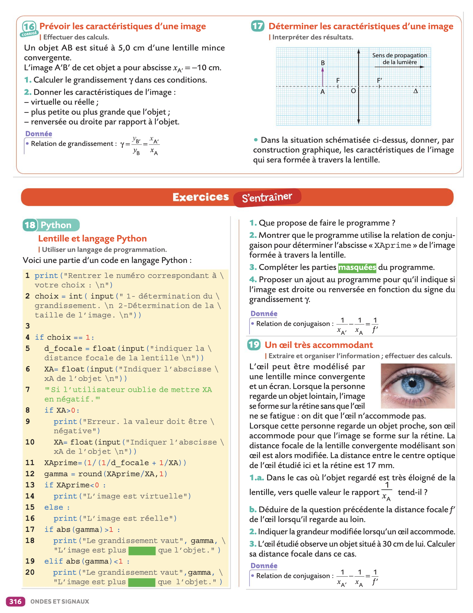
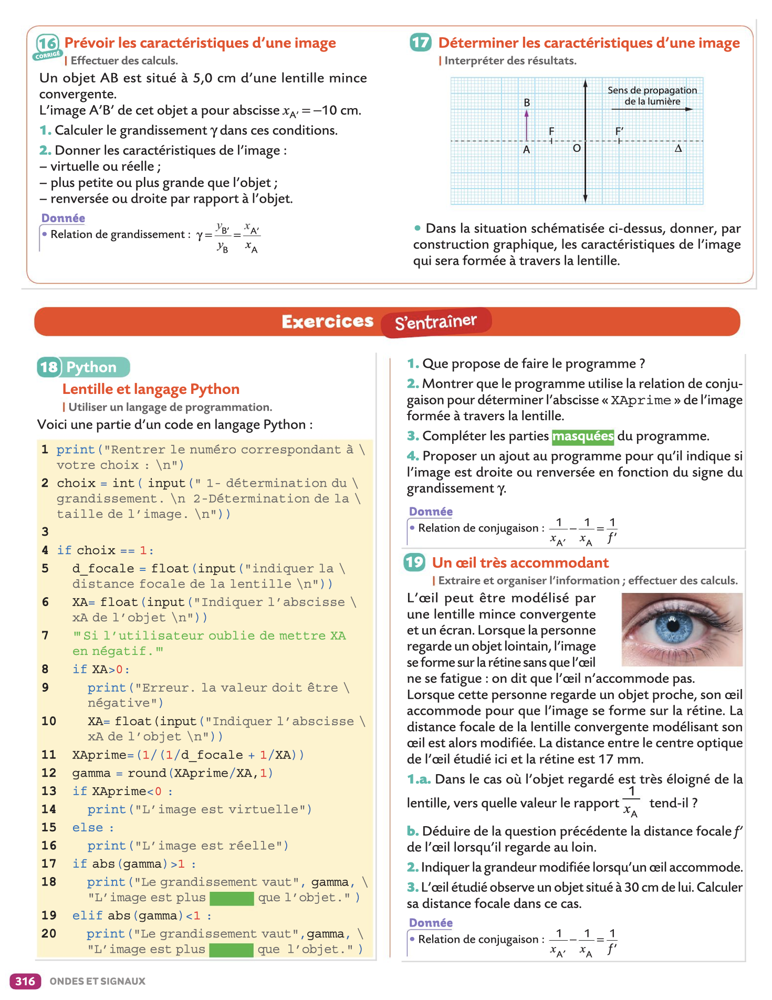
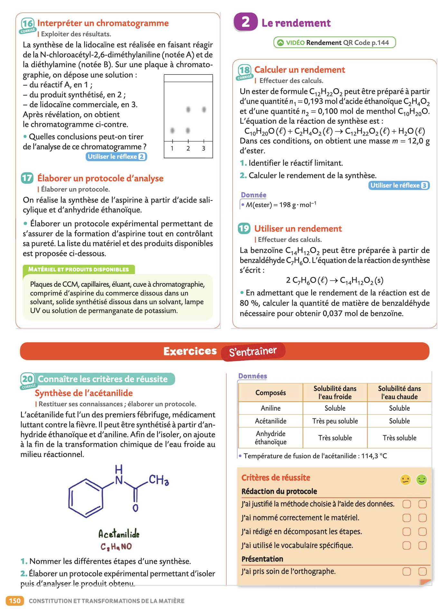

Cours et TP⚓︎
Consignes
- Cours: Veillez à toujours avoir imprimé le chapitre suivant à l'avance ainsi lorsque l'on passera à un nouveau chapitre vous l'aurez à votre disposition.
- Travaux Pratiques: Terminez systématiquement de rédiger le dernier TP qui a eu lieu et préparez le suivant pour la prochaine séance de TP.
Chapitre 1: Composition d'un système chimique
- 📚Chapitre I
- ⚛️TP1 Préparation d'une solution colorée
- ⚛️TP1 Protocole de dilution à distribuer après proposition (édit)
- ⚛️TP2 Dosage spectrophotométrique du dakin - Loi de Beer Lambert
Exercices du livre (pages 24 Ã 30)


Chapitre 2: De la structure à la polarité d'une entité
- 📚Chapitre II
- ⚛️TP3 Géométrie des molécules et polarité (préparation)
- ⚛️TP3 Géométrie des molécules et polarité
- Fiche méthode Prise en main de jmol
- Télécharger Jmol
Exercices du livre (pages 89 Ã 96)


Chapitre 3: Cohésion et dissolution des solides
- 📚Chapitre III
- ⚛️TP4 Solubilité
- ⚛️TP5 Les propriétés des savons (préparation)
- ⚛️TP5 Les propriétés des savons
Exercices du livre (pages 112 Ã 116)


Chapitre 4: Image et lentille
- 📚Chapitre IV
- Fiche méthode Atelier Scientifique pour la relation de conjugaison
- ⚛️TP6 Relation de conjugaison
- ⚛️TP7 Mise au point
Exercices du livre (pages 314 Ã 319)
 


Chapitre 5: Couleur d'un objet
Exercices du livre (pages 330 Ã 334)


Chapitre 6: La lumière
Exercices du livre (pages 346 Ã 352)


Chapitre 7: Structure des composés organiques
Exercices du livre (pages 130 Ã 134)


Chapitre 8: Synthèse de composés organiques
Exercices du livre (pages 148 Ã 152)


Chapitre 9: Interactions gravitationnelles et électriques
Exercices du livre (pages 184 Ã 190)


Chapitre 11: Énergie mécanique
- 📚Chapitre XI
- ⚛️TP15 Évolution de l'énergie mécanique
- ⚛️TP16 Le théorème de l'énergie cinétique
Exercices du livre (pages 266 Ã 274)


Chapitre 12: Oxydoréduction et avancement
- 📚Chapitre XII
- ⚛️TP17 Les réactions d'oxydoréduction
- ⚛️TP17 bis D’autres réactions d'oxydoréduction
- ⚛️TP18 Avancement
- 🐍 Bilan de matière
Exercices du livre (pages 42 Ã 47) & (pages 56 Ã 62)


Chapitre 13: Avancement et titrage
- 📚Chapitre XIII
- ⚛️TP19 Retrouver le titre d'une solution
- ⚛️TP20 Titrage Lugol diiode
- 🐍 Titrage
Exercices du livre (pages 73 Ã 76)


Chapitre 14: Énergie électrique
- 📚Chapitre XIV
- ⚛️TP21 Modélisation d'un panneau photovoltaïque
- ⚛️TP21 bis Rendement d'un panneau photovoltaïque
- 🐍 Bilan de puissance et rendement
Exercices du livre (pages 246 Ã 252)


Chapitre 15: Les ondes
Exercices du livre (pages 294 Ã 300)


Chapitre 16: Pression
- 📚Chapitre XVI
- ⚛️TP23 Statique des fluides
- ⚛️TP24 Loi de Mariotte (préparation)
- ⚛️TP24 Loi de Mariotte
Exercices du livre (pages 204 Ã 210)


Chapitre 17: Combustion
Exercices du livre (pages 164 Ã 166)